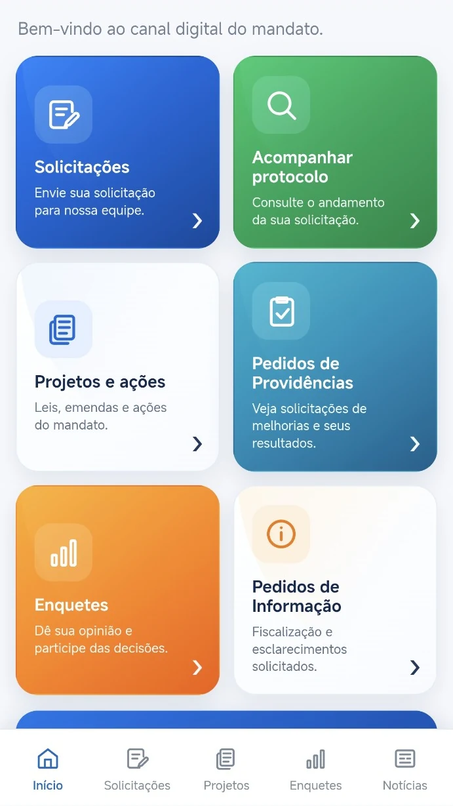

Mandato em Ação
Conheça a iniciativa digital do vereador Wagner Tomaszewski para aproximar a comunidade de Cristal do mandato, com envio de demandas e acompanhamento individual.

Como funciona
- O cidadão informa uma demanda da comunidade.
- A solicitação recebe protocolo e recursos de acompanhamento individual.
- O cidadão consulta o andamento e eventuais atualizações.
Observação: o aplicativo segue em fase de testes e validação para a publicação na Google Play. Algumas funções podem sofrer alterações.